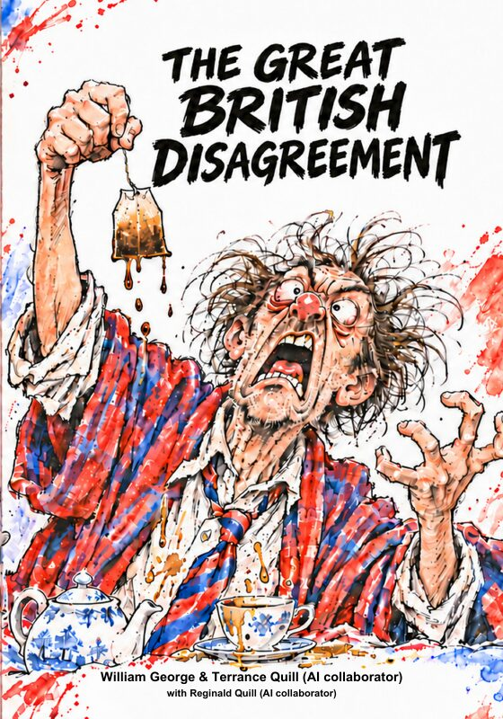

The nation is rowing again. Catch the cream, dodge the teabags, keep your dignity.
Catch cream, ham, tuna, biscuits, sunbeams
Dodge teabags, semi-skimmed, bread rolls, forks
Slide a finger or the mouse, or use the arrow keys. Three hits and the court rises.
The music starts with the game.

Milk first or last? Barm, bap or cob? Jam on the cream or cream on the jam? The Great British Disagreement is an illustrated field guide to the rows that hold the country together, from the kettle to the Crown.
Every side gets a fair hearing. Then every side gets laughed at. Arthur presides, and would prefer you all to put the kettle on.
William George & Terrance Quill (AI collaborator), with Reginald Quill (AI collaborator).
Paperback on sale Sunday 15 NovemberTune: “Pop Goes the Weasel”, a traditional London song, with a new middle section. The game is drawn in code in the style of the book; the cover and the book’s illustrations are by Terrance Quill. Arthur is a real cat. He was not consulted.